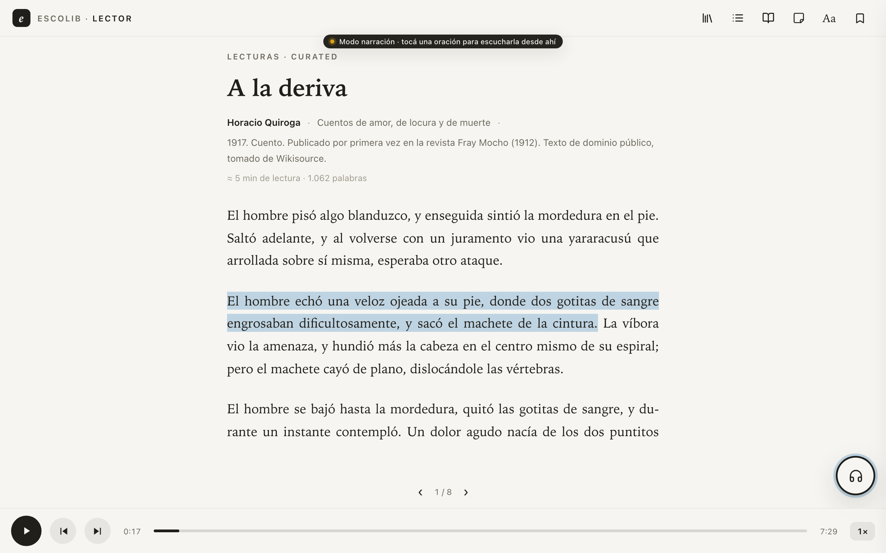
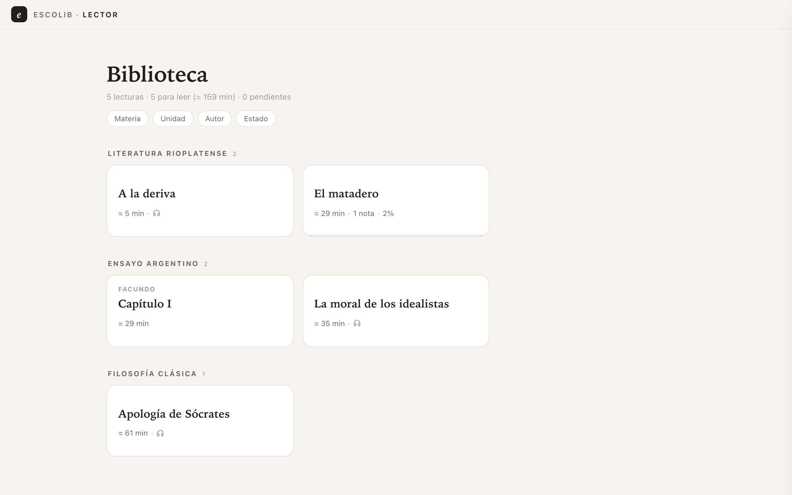
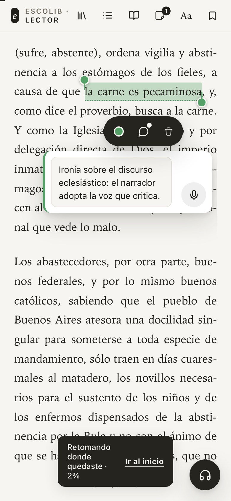

Textos de estudio que se leen, se escuchan y se anotan
escolib es un kit open source para convertir fragmentos de estudio en lecturas web con narración sincronizada por oración y notas ancladas al texto. La curaduría se hace en una sesión de IA con el camino ya trazado; el resultado se lee, se escucha y se anota en cualquier dispositivo.

Qué resuelve
No hay hoy una forma estándar de guardar — ni de compartir — un texto de estudio junto con su audio y sus anotaciones.
Las herramientas existentes cubren cada una un pedazo. Los e-readers (Kindle, Apple Books) anotan bien pero no narran texto propio; las apps de audiolibros narran pero no están pensadas para estudiar ni anclan notas al texto; las herramientas de texto-a-voz leen en voz alta pero no dejan nada persistente. Algunos productos pagos se acercan — pero ninguno produce un resultado transportable: el texto fiel de un fragmento, su audio sincronizado oración por oración y las anotaciones, juntos, en un formato que se pueda mover.
Sin un formato común, el trabajo de curar un texto — conseguir una buena edición, limpiarlo, narrarlo, anotarlo — se repite cada vez que alguien más estudia el mismo material.
El objetivo de escolib es estandarizar ese resultado para compartirlo: que el trabajo se haga una vez y le sirva al siguiente.
Cómo está pensado
Tres partes que marcan hacia dónde va el proyecto. Hoy conviven en este repo; a futuro pueden ser piezas independientes.
Un formato estándar y transportable
La pieza de estudio como paquete: texto curado, audio con timestamps por oración (timeline.json), formas habladas y anotaciones exportables. Hoy es una carpeta con convenciones claras; el objetivo es un paquete versionado con import/export — mirando de cerca EPUB 3 Media Overlays, el estándar real de texto+audio sincronizado.
Un reader que lo reproduce
Una app web self-hosted y sin cuentas: dos modos de lectura, notas por teclado y por dictado ancladas al texto, narración sincronizada que sigue la vista incluso entre páginas, export de notas, offline de lo visitado. Hoy es un solo archivo HTML sin dependencias; PWA instalable y apps móviles, en el roadmap.
FUNCIONA HOY · es la demoWorkflows de curaduría con IA
El camino trazado para producir contenido: sesiones de Claude Code con comandos (/new-lecture) y contexto que guían PDF → texto fiel → texto curado → narración, con ediciones reproducibles por script. Hoy está documentado para Claude Code y Google Cloud TTS; abrirlo a otros LLMs y agentes, y a otros proveedores de texto-a-voz (incluidos locales y gratuitos), está en el roadmap.
A escolib le falta mucho para llegar ahí — esto dice hacia dónde va cada parte, no lo que ya es.
Cómo se usa
El flujo completo, con lo que se necesita y lo que cuesta.
-
Cloná y levantá el reader
git clone+python3 serve.py. Ya tenés la biblioteca demo andando en tu red local — se lee desde el iPad o el celular sin instalar nada. -
Abrí una sesión de Claude Code y pedile /new-lecture
Le das tu PDF (el apunte, el capítulo, el fragmento de cátedra) y la sesión te guía: evalúa la fuente, extrae el texto fiel por script reproducible, lo cura para estudio con ediciones documentadas, y prepara las formas habladas para la síntesis. Vos decidís en los casos dudosos.
-
Narralo (opcional)
python3 narrate.py <slug>sintetiza por oración con timestamps exactos y cache — corregir una frase después cuesta centavos, no el texto entero. Sin audio, todo lo demás funciona igual. -
Estudiá
Leé en scroll o por páginas, escuchá con la vista siguiendo al audio, anotá con doble toque, dictá comentarios, exportá tus notas con contexto para una sesión de estudio con IA.
El reader funciona sin IA para leer lectures ya producidas. La IA hace falta para producir contenido nuevo, y es probable que siga siendo así: la curaduría es el tipo de trabajo que una sesión guiada resuelve bien.
El mismo reader en todos lados
Un solo archivo HTML sin dependencias: biblioteca con estantes y filtros en desktop, notas con dictado en el teléfono.


Quick start
# clonar y servir (la demo ya está adentro)
git clone https://github.com/patoschi/escolib.git
cd escolib/reader
python3 serve.py
# → http://localhost:8123/
# producir una lecture nueva: desde el repo,
# en una sesión de Claude Code
/new-lecture mi-apunte.pdf- La demo incluye cinco textos de dominio público, tres con narración — para probar todo sin producir nada.
- El tutorial completo del flujo con Claude Code está en docs/tutorial.md: una sesión real comentada, de un PDF de cátedra a la lecture narrada.
- ¿Otra IA? El contexto del repo (
CLAUDE.md,AGENTS.md) es legible por cualquier agente; adaptar el flujo a otros proveedores está en el roadmap.
Hacia dónde va
En orden de importancia. Todo vive como issues en el repo.
- El paquete compartible — formalizar el formato de lecture (manifest, versionado, import/export desde el reader) y evaluar la convergencia con EPUB 3 Media Overlays. Es el pilar 1 hecho realidad: curás una vez, compartís el paquete.
- Descarga de audio por lecture — narraciones remotas cacheables para escuchar offline, sin repos pesados.
- Curaduría multi-IA — documentar y adaptar los workflows a otros proveedores además de Claude Code.
- Síntesis multi-proveedor — hoy GCP Chirp3-HD; abstraer la capa de TTS (incluyendo opciones locales y gratuitas) conservando los timestamps por oración.
- E-readers y apps — si el formato converge a EPUB3+SMIL, los lectores compatibles vienen gratis; PWA instalable mientras tanto.
No hay un modelo de negocio detrás: es open source colaborativo. La idea es simple — que curar un texto de estudio se haga una vez, bien, y se comparta.
Documentación
Todo el proyecto está documentado para personas y para agentes de IA.
De un PDF a una lecture
El flujo completo con una sesión de Claude Code, paso a paso.
READMEVisión general
Qué es, cómo se usa, qué se versiona.
reader/El reader
Features, decisiones de arquitectura y cómo verificar cambios.
lectures/Pipeline de textos
PDF → transcript → curado → narración, en detalle.
IssuesRoadmap
Los mismos puntos de arriba, como issues del repo.